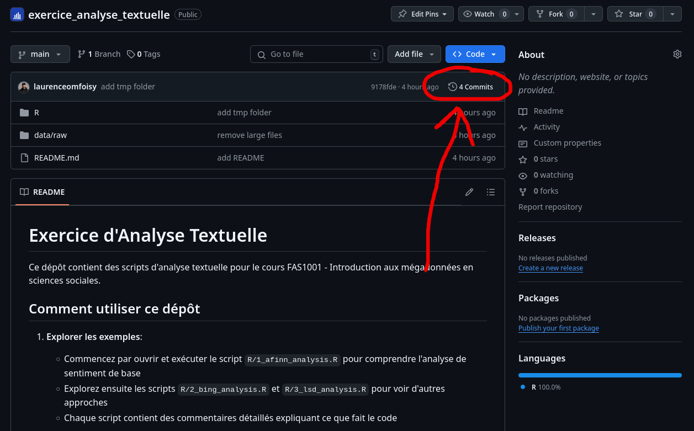
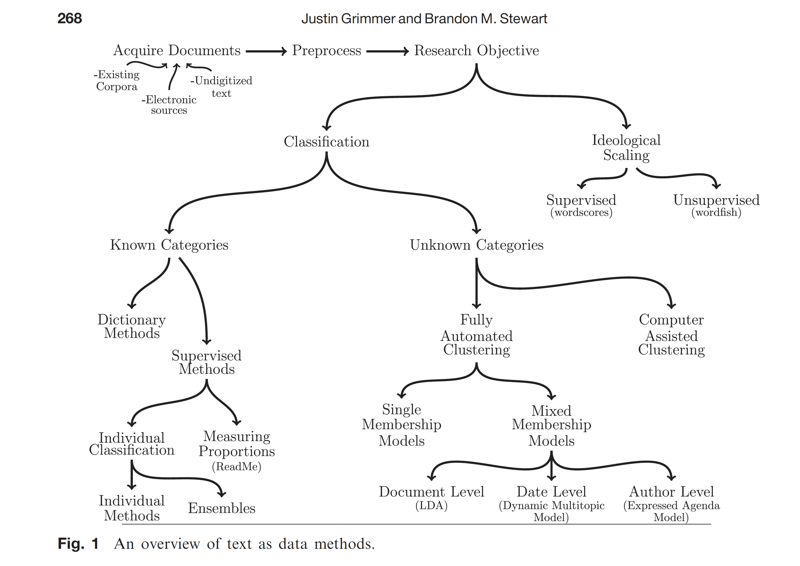
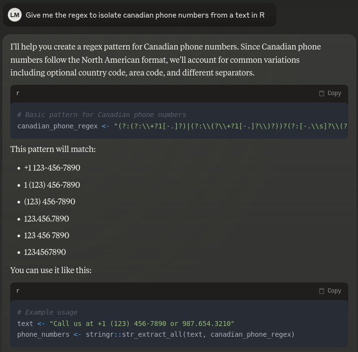

%%{init: {"theme": "base", "themeVariables": {"primaryColor": "#f4f4f4", "textColor": "#333", "lineColor": "#666"}, "flowchart": {"nodeSpacing": 200, "rankSpacing": 150, "diagramPadding": 50, "htmlLabels": true}}}%%
graph LR
A[Texte brut] --> B[Nettoyage]
B --> C[Tokenisation]
C --> D[Analyse]
D --> E[Visualisation]
Cours 6 : L’analyse textuelle
Introduction aux mégadonnées en sciences sociales
Laurence-Olivier M. Foisy
Université de Montréal
Retour sur le Quiz 1
- Chemins d’accès relatifs et (../..)
- Les factors
- Alpha de Cronbach à 0.6?
- Utilisation de ChatGPT
- Éviter de mettre raw dans clean
- Éviter de mettre les citations en texte
- Ne laissez pas de code inutile
- Comment retourner sur GitHub pour voir l’ancienne version de votre TP1
Utiliser .. dans les chemins d’accès
Dans le quarto, le chemin vers le graph était:

quiz_1/ <---------------------------------------- R Part de ici
├── data/
│ └── raw
│ ├── ces2021.csv
│ └── CES-E-1993_F1_subset.csv
├── docs
│ ├── codebooks/
│ └── quiz_1
│ ├── img
│ │ └── UdeM_CoA.png
│ ├── quiz_1.pdf
│ ├── quiz_1.qmd <------------------------- Quarto part de ici
│ └── references.bib
├── R
│ ├── 1_cleaning_1993.R
│ ├── 2_cleaning_2021.R
│ ├── 3_merging.R
│ └── 4_graph.R
├── README.md
└── results
└── graphs
└── evolution_graph.pngLes factors
table(df_raw_1993$CPSIGEN, useNA = "ifany")
df_clean_1993$ses_female <- NA
df_clean_1993$ses_female[df_raw_1993$CPSIGEN != 1] <- 0
df_clean_1993$ses_female[df_raw_1993$CPSIGEN == 5] <- 1
df_clean_1993$ses_female <- as.factor(df_clean_1993$ses_female)
table(df_clean_1993$ses_female, useNA = "ifany") Si on fait class(df_clean$ses_female)
Quand utiliser les factors?
table(df_raw$country, useNA = "ifany")
df_clean$country[df_raw$country == 1] <- "CA"
df_clean$country[df_raw$country == 2] <- "UK"
df_clean$country[df_raw$country == 3] <- "FR"
df_clean$country <- as.factor(df_clean$country)
table(df_clean$country, useNA = "ifany")
m <- lm(variable ~ country, data = df_clean)Évitez de mettre raw dans clean
table(df_raw_1993$CPSIGEN)
df_clean_1993 <- df_raw_1993 %>%
mutate(ses_female = case_when(
CPSIGEN == 5 ~ 1,
CPSIGEN == 1 ~ 0,
TRUE ~ NA_real_ ))
table(df_clean_1993$ses_female, useNA = "ifany")La variable est polluée
Utiliser les citations en markdown
La mauvaise façon ❌
Selon Wickham (2014) (Wickham, 2014), les tidy data ont trois propriétés.
Les deux options ✅
Selon Wickham (2014), les tidy data ont trois propriétés:
Les tidy data ont trois propriétés (Wickham, 2014).
Ne pas laisser de code inutile
Utiliser l’historique GitHub pour voir les changements
TP2 - Travail de mi-session
- À remettre le 12 mars 2025 avant minuit
- 20% de la note finale
- Préparation de l’environnement de travail
- Création de l’arborescence
- Préparation des données
- Une visualisation
- Un document quarto
- Une question de recherche
- Courte revue de littérature
- Source et structure des données
- Planification méthodologique
Gabarit suggéré
- Introduction
- Question de recherche
- Revue de littérature
- Hypothèses
- Méthodologie
- Résultats
- Discussion
- Conclusion
Introduction à l’analyse textuelle

Pourquoi analyser du texte?
Les données sont partout 🌎 🌍 🌏
- Données textuelles disponibles en grande quantité
- Méthodes de recherche de plus en plus accessibles
- Idée(s) sur différentes sources de données textuelles?
L’explosion des données textuelles
- Médias sociaux
- Articles de presse
- Documents légaux
- Sondages (questions ouvertes)
- Courriels
- Messages instantanés
- Beaucoup plus
Que peut-on faire avec le texte?
- Analyse de sentiment
- Classification de documents
- Extraction de thèmes
- Résumé automatique
- Analyse de discours
Différentes méthodes d’analyse textuelle
De texte à données
Introduction aux expressions régulières
Qu’est-ce qu’on essaie de faire?
- Trouver des patterns dans du texte
- Exemple : Trouver tous les numéros de téléphone dans un document
- Exemple : Extraire tous les courriels d’un texte
Un exemple concret
Imaginons que vous ayez ce texte:
Contact: Marie (514-555-1234)
Courriel: marie@udem.ca
Contact: Pierre (438-555-5678)
Courriel: pierre@udem.caComment trouver automatiquement tous les numéros de téléphone?
La solution “manuelle”
- Chercher des chiffres
- Regroupés par 3 ou 4
- Séparés par des tirets
- Commençant par 514 ou 438
La solution avec regex
Décomposons le pattern
\d: un chiffre (0-9){3}: exactement 3 fois-: un tiret- Donc
\d{3}-\d{3}-\d{4}trouve: “514-555-1234”
Pourquoi c’est utile?
- Automatise la recherche de patterns
- Fonctionne sur n’importe quelle quantité de texte
- Plus rapide et fiable que la recherche manuelle
- Essentiel pour le nettoyage de données textuelles
Utilisation dans R
Le package stringr
- Fait partie du tidyverse
- Fonctions simples et cohérentes
- Documentation claire avec de nombreux exemples
Fonctions principales de stringr
Exemple pratique
Les briques de base des regex
Rechercher des chiffres avec \d
texte <- "Je suis né en 1990 et j'ai 33 ans"
str_extract_all(texte, "\\d+")
# Résultat: [1] "1990" "33"Rechercher des lettres avec [A-Z] et [a-z]
texte <- "QUÉBEC est une ville du Canada"
# Trouver les mots en majuscules
str_extract(texte, "[A-Z]+")
# Résultat: "QUÉBEC"Rechercher des espaces avec \s
Les quantificateurs : Combien de fois?
Le + : “un ou plusieurs”
# Trouver les nombres (un ou plusieurs chiffres)
texte <- "J'ai 1 chat et 22 poissons"
str_extract_all(texte, "\\d+")
# Résultat: [1] "1" "22"Le * : “zéro ou plusieurs”
# Trouver les mots avec ou sans 's' à la fin
texte <- "chat chats chien chiens"
str_extract_all(texte, "chat[s]*")
# Résultat: [1] "chat" "chats"Le ? : “optionnel (zéro ou un)”
Exemples pratiques pour les sciences sociales
Extraire des codes postaux canadiens
adresse <- "Mon adresse est H2X 1Y6"
str_extract(adresse, "[A-Z]\\d[A-Z]\\s?\\d[A-Z]\\d")
# Résultat: "H2X 1Y6"Extraire des identifiants Twitter
tweet <- "Suivez-moi @MonProfR et @UdeM"
str_extract_all(tweet, "@\\w+")
# Résultat: [1] "@MonProfR" "@UdeM"Identifier des URLs dans un texte
Les fonctions
Qu’est-ce qu’une fonction en R?
- Une fonction est un bloc de code réutilisable
- Elle effectue une tâche spécifique
- Elle peut accepter des inputs (arguments)
- Elle produit généralement un output
Pourquoi utiliser des fonctions?
- Réutiliser du code: Évite de copier-coller et répéter le même code
- Modularité: Décompose des problèmes complexes en parties gérables
- Lisibilité: Rend le code plus facile à comprendre
Types de fonctions en R
Fonctions intégrées - mean(), sum(), length() - read.csv(), write.csv() - lm(), glm()
Fonctions de packages - dplyr::filter() - ggplot2::geom_point() - sondr::topdown_fa()
Fonctions personnalisées - Créées par vous pour des besoins spécifiques
Anatomie d’une fonction
calculer_moyenne <- function(nombres) {
# Documentation: Calcule la moyenne d'un vecteur de nombres
# Corps de la fonction
somme <- sum(nombres) # Somme de tous les nombres
taille <- length(nombres) # Nombre d'éléments
moyenne <- somme / taille # Calcul de la moyenne
# Valeur de retour
return(moyenne)
}
# Utilisation
moyenne_classe <- calculer_moyenne(c(85, 90, 78, 92, 88))
print(moyenne_classe) # Affiche: 86.6- Nom: Choisir un nom descriptif, utiliser des verbes
- Arguments: Paramètres d’entrée, peuvent avoir des valeurs par défaut
- Corps: Les opérations à effectuer
- Retour: La valeur ou l’objet que la fonction renvoie
Bonnes pratiques pour les fonctions
- Donner des noms clairs et descriptifs
- Utiliser des verbes pour les fonctions (
calculer_,analyser_)
- Utiliser des verbes pour les fonctions (
- Une fonction = une tâche unique et précise
- Ajouter des commentaires expliquant le but et les arguments
Analyse de sentiment
La ligne rouge
Super good kebab! The portions are generous, the prices are really reasonable, and the quality is there. Tasty meat, fresh bread, and everything is well seasoned. An excellent address for a meal that is good without breaking the bank. I recommend!
- Sentiment: Positif
- Thèmes: Nourriture, Prix
- Note: 5/5
Étape 1: Création du dataframe
# Créer un data.frame avec notre review
review <- data.frame(
restaurant = "La ligne rouge",
text = "Super good kebab! The portions are generous, the prices are really reasonable, and the quality is there. Tasty meat, fresh bread, and everything is well seasoned. An excellent address for a meal that is good without breaking the bank. I recommend!",
stringsAsFactors = FALSE
)Donne un dataframe comme ceci
| restaurant | text |
|---|---|
| La ligne rouge | Super good kebab! […] |
Étape 2: Nettoyage de base
# Nettoyage avec stringr
review_clean <- review
review_clean$text <- stringr::str_to_lower(review_clean$text) # Minuscules
review_clean$text <- stringr::str_remove_all(review_clean$text, "!") # Exclamations
review_clean$text <- stringr::str_remove_all(review_clean$text, "\\.") # Points
review_clean$text <- stringr::str_remove_all(review_clean$text, ",") # VirgulesSuper good kebab! The portions are generous, the prices are really reasonable, and the quality is there. Tasty meat, fresh bread, and everything is well seasoned. An excellent address for a meal that is good without breaking the bank. I recommend!
Étape 2: Nettoyage de base
# Nettoyage avec stringr
review_clean <- review
review_clean$text <- stringr::str_to_lower(review_clean$text) # Minuscules
review_clean$text <- stringr::str_remove_all(review_clean$text, "!") # Exclamations
review_clean$text <- stringr::str_remove_all(review_clean$text, "\\.") # Points
review_clean$text <- stringr::str_remove_all(review_clean$text, ",") # Virgulessuper good kebab the portions are generous the prices are really reasonable and the quality is there tasty meat fresh bread and everything is well seasoned an excellent address for a meal that is good without breaking the bank i recommend
Étape 3: Tokenisation
r$> head(tokens, 10)
restaurant word
1 La ligne rouge super
2 La ligne rouge good
3 La ligne rouge kebab
4 La ligne rouge the
5 La ligne rouge portions
6 La ligne rouge are
7 La ligne rouge generous
8 La ligne rouge the
9 La ligne rouge prices
10 La ligne rouge areÉtape 4: Retrait des mots vides
r$> head(tokens_clean, 10)
restaurant word
1 La ligne rouge super
2 La ligne rouge good
3 La ligne rouge kebab
4 La ligne rouge portions
5 La ligne rouge generous
6 La ligne rouge prices
7 La ligne rouge really
8 La ligne rouge reasonable
9 La ligne rouge quality
10 La ligne rouge tastyÉtape 5: Analyse de sentiment (AFINN)
r$> head(arranged_scores, 10)
word value
1 super 3
2 good 3
3 excellent 3
4 good 3
5 generous 2
6 recommend 2
7 fresh 1Étape 6: Score total
total_sentiment <- dplyr::summarise(
sentiment_scores,
n_words = dplyr::n(),
total_score = sum(value),
avg_score = mean(value)
)r$> total_sentiment
n_words total_score avg_score
1 7 17 2.428571Avec plusieurs textes
Nothing exceptional, just edible. I had good feedback about the food and I was very, very disappointed. Not to mention cash only which for me is unacceptable. Too many good restaurants in the neighborhood, I won’t go back there
Food is good and price is ok. The only issu is the attitude of the staff. The lady at he cash register and the guy that takes the orders seriously lack client service skills. Both are very rude. Hygiene is another issue, there are flies all over the place. In addition to all this, they only take cash.
# Créer un data.frame avec plusieurs reviews
reviews <- data.frame(
restaurant = "La ligne rouge",
text = c(
"Super good kebab! The portions are generous, the prices are really reasonable, and the quality is there. Tasty meat, fresh bread, and everything is well seasoned. An excellent address for a meal that is good without breaking the bank. I recommend!",
"Nothing exceptional, just edible. I had good feedback about the food and I was very, very disappointed. Not to mention cash only which for me is unacceptable. Too many good restaurants in the neighborhood, I won't go back there",
"Food is good and price is ok. The only issu is the attitude of the staff. The lady at he cash register and the guy that takes the orders seriously lack client service skills. Both are very rude. Hygiene is another issue, there are flies all over the place. In addition to all this, they only take cash."
),
stringsAsFactors = FALSE
) %>%
dplyr::mutate(id = 1:nrow(.))Nettoyage des multiples textes
reviews_clean <- reviews
reviews_clean$text <- stringr::str_to_lower(reviews_clean$text) # Minuscules
reviews_clean$text <- stringr::str_remove_all(reviews_clean$text, "!") # Exclamations
reviews_clean$text <- stringr::str_remove_all(reviews_clean$text, "\\.") # Points
reviews_clean$text <- stringr::str_remove_all(reviews_clean$text, ",") # VirgulesÉtape 3: Tokenisation
r$> head(tokens, 10)
restaurant id word
1 La ligne rouge 1 super
2 La ligne rouge 1 good
3 La ligne rouge 1 kebab
4 La ligne rouge 1 the
5 La ligne rouge 1 portions
6 La ligne rouge 1 are
7 La ligne rouge 1 generous
8 La ligne rouge 1 the
9 La ligne rouge 1 prices
10 La ligne rouge 1 areÉtape 4: Retrait des mots vides
r$> head(tokens_clean, 10)
restaurant id word
1 La ligne rouge 1 super
2 La ligne rouge 1 good
3 La ligne rouge 1 kebab
4 La ligne rouge 1 portions
5 La ligne rouge 1 generous
6 La ligne rouge 1 prices
7 La ligne rouge 1 really
8 La ligne rouge 1 reasonable
9 La ligne rouge 1 quality
10 La ligne rouge 1 tastyÉtape 5: Analyse de sentiment (AFINN)
r$> head(sentiment_scores, 10)
restaurant id word value
1 La ligne rouge 1 super 3
2 La ligne rouge 1 good 3
3 La ligne rouge 1 generous 2
4 La ligne rouge 1 fresh 1
5 La ligne rouge 1 excellent 3
6 La ligne rouge 1 good 3
7 La ligne rouge 1 recommend 2
8 La ligne rouge 2 good 3
9 La ligne rouge 2 disappointed -2
10 La ligne rouge 2 unacceptable -2Étape 6: Score total
# Calculate summary statistics per review
sentiment_summary <- sentiment_scores %>%
group_by(id, restaurant) %>%
summarise(
total_sentiment = sum(value), # Sum of all sentiment scores
mean_sentiment = mean(value), # Average sentiment
word_count = n(), # Number of sentiment words
min_sentiment = min(value), # Most negative word
max_sentiment = max(value) # Most positive word
) %>%
ungroup()
Voici les résultats
r$> print(sentiment_summary)
# A tibble: 3 × 7
id restaurant total_sentiment mean_sentiment word_count min_sentiment max_sentiment
<int> <chr> <dbl> <dbl> <int> <dbl> <dbl>
1 1 La ligne rouge 17 2.43 7 1 3
2 2 La ligne rouge 2 0.5 4 -2 3
3 3 La ligne rouge 1 0.5 2 -2 3Réassembler les données
# First, let's create a dataframe with just id and text
original_texts <- reviews %>%
select(id, text)
# Then merge it with your sentiment summary
sentiment_summary_with_text <- sentiment_summary %>%
left_join(original_texts, by = "id")En réunissant le text original avec les analyses:
r$> sentiment_summary_with_text
# A tibble: 3 × 8
id restaurant total_sentiment mean_sentiment word_count min_sentiment max_sentiment text
<int> <chr> <dbl> <dbl> <int> <dbl> <dbl> <chr>
1 1 La ligne rouge 17 2.43 7 1 3 Super good kebab! [...]
2 2 La ligne rouge 2 0.5 4 -2 3 Nothing exceptional [...]
3 3 La ligne rouge 1 0.5 2 -2 3 Food is good and price is ok. [...]
Lexicoder (LSD)
- Spécialisé pour textes politiques
- Gestion avancée des négations
- Validation académique extensive
- Plus précis pour l’analyse politique
Pourquoi LSD pour la science politique?
- Contexte politique
- Vocabulaire politique spécifique
- Expressions complexes
- Nuances importantes
- Gestion des négations
- “not bad” ≠ “bad”
- “no support” vs “support”
- Validation scientifique
- Testé sur des textes politiques
- Utilisé dans des publications majeures
- Benchmark en science politique
Étape 1 : Préparation des données pour LSD
library(quanteda)
library(pbapply)
library(dplyr)
library(tidytext)
library(stringr)
source("R/lsd_prep_functions.R")
# Charger les exemples de reviews de restaurants
reviews <- data.frame(
restaurant = "La ligne rouge",
text = c(
"Super good kebab! The portions are generous, the prices are really reasonable, and the quality is there. Tasty meat, fresh bread, and everything is well seasoned. An excellent address for a meal that is good without breaking the bank. I recommend!",
"Nothing exceptional, just edible. I had good feedback about the food and I was very, very disappointed. Not to mention cash only which for me is unacceptable. Too many good restaurants in the neighborhood, I won't go back there",
"Food is good and price is ok. The only issu is the attitude of the staff. The lady at he cash register and the guy that takes the orders seriously lack client service skills. Both are very rude. Hygiene is another issue, there are flies all over the place. In addition to all this, they only take cash."
),
stringsAsFactors = FALSE
) %>%
dplyr::mutate(id = 1:nrow(.))Étape 2 : Division en phrases
Prétraitement LSD : Fonctionnalités
- Ordre des fonctions
- L’ordre d’application est important
- Chaque fonction a un rôle spécifique
- Fonctions spéciales
- LSDprep_contr : Gère les contractions (don’t → do not)
- LSDprep_negation : Traite les négations
- mark_proper_nouns : Identifie les noms propres
- Avantages
- Prétraitement standardisé
- Meilleure gestion des négations
- Plus précis pour l’analyse de sentiment
Étape 3 : Application des fonctions de préparation
# Application séquentielle des fonctions de préparation LSD
reviews_sentences$text_prepped <- NA
reviews_sentences$text_prepped <- pbapply::pbsapply(reviews_sentences$text, LSDprep_contr)
reviews_sentences$text_prepped <- pbapply::pbsapply(reviews_sentences$text_prepped, LSDprep_dict_punct)
reviews_sentences$text_prepped <- pbapply::pbsapply(reviews_sentences$text_prepped, remove_punctuation_from_acronyms)
reviews_sentences$text_prepped <- pbapply::pbsapply(reviews_sentences$text_prepped, remove_punctuation_from_abbreviations)
reviews_sentences$text_prepped <- pbapply::pbsapply(reviews_sentences$text_prepped, LSDprep_punctspace)
reviews_sentences$text_prepped <- pbapply::pbsapply(reviews_sentences$text_prepped, LSDprep_negation)
reviews_sentences$text_prepped <- pbapply::pbsapply(reviews_sentences$text_prepped, LSDprep_dict)
reviews_sentences$text_prepped <- pbapply::pbsapply(reviews_sentences$text_prepped, mark_proper_nouns)Étape 3 : Application des fonctions de préparation
Avant
Après
Étape 4 : Création du corpus et tokenisation
# Convertir en dataframe (pour s'assurer du type)
reviews_sentences <- as.data.frame(reviews_sentences)
# Création du corpus et tokenisation
corpus_text <- quanteda::tokens(reviews_sentences$text_prepped)r$> head(corpus_text)
Tokens consisting of 6 documents.
text1 :
[1] "super" "good" "kebab" "!"
text2 :
[1] "the" "portions" "are" "generous" "," "the"
[7] "prices" "are" "really" "reasonable" "," "and"
[ ... and 5 more ]
text3 :
[1] "tasty" "meat" "," "fresh" "bread" ","
[7] "and" "everything" "is" "well" "seasoned" "." Étape 5 : Application du dictionnaire LSD
# Application du dictionnaire LSD pour l'analyse de sentiment
matrice_sentiment <- quanteda::dfm(
quanteda::tokens_lookup(corpus_text, data_dictionary_LSD2015, nested_scope = "dictionary")
)r$> print(matrice_sentiment)
Document-feature matrix of: 15 documents, 4 features (76.67% sparse) and 0 docvars.
features
docs negative positive neg_positive neg_negative
text1 0 2 0 0
text2 0 3 0 0
text3 0 2 0 0
text4 0 2 0 1
text5 0 0 0 0
text6 0 0 1 0
[ reached max_ndoc ... 9 more documents ]Étape 6 : Calcul des scores de sentiment
# Conversion de la matrice de fréquence des termes en dataframe
resultats_sentiment <- quanteda::convert(matrice_sentiment, to = "data.frame")
# Combinaison des résultats de sentiment avec les données originales
articles_sentiment <- cbind(reviews_sentences, resultats_sentiment)
# Calcul des métriques de sentiment
articles_sentiment <- articles_sentiment %>%
mutate(
total_words = str_count(text_prepped, "\\S+"),
# Calcul des proportions de termes positifs et négatifs
proportion_positive = (positive + neg_negative) / total_words,
proportion_negative = (negative + neg_positive) / total_words,
tone_index = proportion_positive - proportion_negative
)Étape 6 : Calcul des scores de sentiment
| doc_id | positive | negative | neg_pos | neg_neg | tone_index |
|---|---|---|---|---|---|
| text1 | 2 | 0 | 0 | 0 | 0.500 |
| text2 | 3 | 0 | 0 | 0 | 0.176 |
| text3 | 2 | 0 | 0 | 0 | 0.167 |
| text4 | 2 | 0 | 0 | 1 | 0.200 |
| text5 | 0 | 0 | 0 | 0 | 0.000 |
| text6 | 0 | 0 | 1 | 0 | -0.143 |
Étape 7 : Agrégation et interprétation des résultats
# Agrégation des résultats par review (id)
sentiment_par_review <- articles_sentiment %>%
group_by(id) %>%
summarise(
text_original = first(reviews$text[id]), # Texte original complet
total_positive = sum(positive), # Somme des termes positifs
total_negative = sum(negative), # Somme des termes négatifs
total_neg_positive = sum(neg_positive), # Somme des négations de termes positifs
total_neg_negative = sum(neg_negative), # Somme des négations de termes négatifs
total_words = sum(total_words), # Nombre total de mots
# Calcul des proportions globales
proportion_positive = sum(positive) / sum(total_words),
proportion_negative = sum(negative) / sum(total_words),
# Indice de ton global normalisé
tone_index = (sum(positive) - sum(negative)) / (sum(positive) + sum(negative)),
.groups = "drop"
) %>%
select(id, text_original, tone_index)Comparaison des scores de sentiment
Scores par review
| Review | Positif | Négatif | Score final |
|---|---|---|---|
| Review #1 | 9 | 0 | +1.0 |
| Review #2 | 2 | 3 | -0.2 |
| Review #3 | 2 | 2 | 0.0 |
Conseils pratiques
- Validation
- Vérifier manuellement les résultats
- Comparer les dictionnaires
- Documenter les choix méthodologiques
- Limites
- Aucun dictionnaire n’est parfait
- Contexte est toujours important
- Valider avec analyses qualitatives
Quel lexique choisir?
| Lexique | Type de score | Forces | Utilisation idéale | Discipline |
|---|---|---|---|---|
| AFINN | -5 à +5 | Nuancé, simple | Médias sociaux, avis | Marketing |
| BING | Pos/Neg | Simple, précis | Analyses générales | Sciences sociales |
| NRC | 8 émotions | Riche en contexte | Analyse émotionnelle | Psychologie |
| Lexicoder | Binaire + thèmes | Validé académiquement | Discours politiques | Science politique |
| VADER | -1 à +1 | Gère emojis/web | Médias sociaux | Communications |
LDA : Allocation de Dirichlet Latente
Qu’est-ce que c’est?
- Une méthode pour découvrir automatiquement des thèmes dans une collection de textes
- Développée en 2003 (Blei, Ng, Jordan)
- Apprentissage non supervisé : l’algorithme découvre seul les structures

L’intuition derrière LDA
L’idée centrale
- Chaque document contient plusieurs sujets
- Chaque sujet est une collection de mots liés
- Les mots apparaissent avec différentes probabilités dans chaque sujet
Comment fonctionne LDA?
Approche non supervisée
- Aucune connaissance préalable
- Pas de liste de mots prédéfinie
- Pas d’étiquettes nécessaires
- Découverte automatique
- Les relations entre mots émergent des données
- Les thèmes se forment naturellement
Le processus en pratique
Étapes simplifiées
- Transformer les textes en chiffres
- Commencer par des assignations aléatoires
- Répéter des milliers de fois:
- Pour chaque mot: quel sujet est le plus probable?
- Mettre à jour les distributions
- Aboutir à des groupes cohérents
Avantages pour les sciences sociales
Pourquoi utiliser LDA en sciences sociales?
- Analyse de grandes quantités de texte (discours politiques, médias sociaux)
- Découverte objective de thèmes sans biais d’interprétation préalable
- Suivi de l’évolution des discours dans le temps
- Combinaison possible avec l’analyse de sentiment
Limites à connaître
Défis du LDA
- Nombre de sujets à définir à l’avance
- Les sujets nécessitent une interprétation humaine
- Besoin d’un volume suffisant de données
Modélisation de sujets (Topic Modeling)
# Chargement des bibliothèques
library(tidytext)
library(tidyr)
library(dplyr)
library(ggplot2)
library(topicmodels)
# Charger les exemples de reviews de restaurants
reviews <- data.frame(
restaurant = "La ligne rouge",
text = c(
"Super good kebab! The portions are generous, the prices are really reasonable, and the quality is there. Tasty meat, fresh bread, and everything is well seasoned. An excellent address for a meal that is good without breaking the bank. I recommend!",
"Nothing exceptional, just edible. I had good feedback about the food and I was very, very disappointed. Not to mention cash only which for me is unacceptable. Too many good restaurants in the neighborhood, I won't go back there",
"Food is good and price is ok. The only issu is the attitude of the staff. The lady at he cash register and the guy that takes the orders seriously lack client service skills. Both are very rude. Hygiene is another issue, there are flies all over the place. In addition to all this, they only take cash."
),
stringsAsFactors = FALSE
) %>%
dplyr::mutate(id = 1:nrow(.))Préparation des données pour le topic modeling
Création de la matrice document-terme
# Créer la matrice document-terme (DTM)
reviews_dtm <- reviews_tokens %>%
count(doc_id, word) %>%
cast_dtm(doc_id, word, n)
# Afficher un aperçu de la matrice
reviews_dtm<<DocumentTermMatrix (documents: 3, terms: 71)>>
Non-/sparse entries: 77/136
Sparsity : 64%
Maximal term length: 11
Weighting : term frequency (tf)
Sample :
Terms
Docs food good price quality
doc_1 0 2 0 1
doc_2 1 1 0 0
doc_3 1 1 1 0Application du modèle LDA
# Exécuter le modèle LDA
set.seed(123) # Pour la reproductibilité
lda_model <- LDA(reviews_dtm, k = 2, control = list(seed = 123, verbose = TRUE))
# Examiner la distribution des sujets pour chaque document
topics <- tidy(lda_model, matrix = "gamma")
topics_wide <- topics %>%
pivot_wider(names_from = topic, values_from = gamma)
print(topics_wide)# A tibble: 3 × 3
document `1` `2`
<chr> <dbl> <dbl>
1 doc_1 0.692 0.308
2 doc_2 0.333 0.667
3 doc_3 0.391 0.609Extraction des termes principaux pour chaque sujet
r$> print(top_terms)
# A tibble: 20 × 3
# Groups: topic [2]
topic term beta
<int> <chr> <dbl>
1 1 portions 0.0384
2 1 hygiene 0.0381
3 1 takes 0.0374
4 1 seasoned 0.0366
5 1 recommend 0.0364
6 1 lady 0.0352
7 1 disappointed 0.0334
8 1 client 0.0333
9 1 super 0.0328
10 1 address 0.0321
11 2 cash 0.113
12 2 food 0.0600
13 2 bank 0.0390
14 2 meal 0.0389
15 2 feedback 0.0377
16 2 bread 0.0374
17 2 meat 0.0371
18 2 kebab 0.0350
19 2 prices 0.0317
20 2 generous 0.0305Interprétation des résultats
Sujet : Services et expérience
- portions (0.0384)
- hygiene (0.0381)
- takes (0.0374)
- seasoned (0.0366)
- recommend (0.0364)
- lady (0.0352)
- disappointed (0.0334)
- client (0.0333)
- super (0.0328)
- address (0.0321)
Sujet : Nourriture et prix
- cash (0.1130)
- food (0.0600)
- bank (0.0390)
- meal (0.0389)
- feedback (0.0377)
- bread (0.0374)
- meat (0.0371)
- kebab (0.0350)
- prices (0.0317)
- generous (0.0305)
Classification des reviews par sujet
# Afficher la distribution des sujets pour chaque review
document_topics <- augment(lda_model, data = reviews_dtm)
# Mettre en forme pour faciliter la lecture
review_classifications <- document_topics %>%
select(document, .topic) %>%
distinct() %>%
mutate(
review_id = as.integer(gsub("doc_", "", document)),
review_text = reviews$text[review_id],
primary_topic = ifelse(.topic == 1, "Nourriture", "Service/Expérience")
) %>%
select(document, review_text, primary_topic) %>%
arrange(document)
# Afficher la classification des reviews
head(review_classifications, 3)Classification des reviews par sujet
Sujet : Nourriture
Review 1
“Super good kebab! The portions are generous, the prices are really reasonable…”
Mots-clés: kebab, meat, bread, portions
Sujet : Service/Expérience
Review 2
“Nothing exceptional, just edible. I had good feedback about the food and I was very, very disappointed…”
Mots-clés: disappointed, cash only, exceptional
Review 3
“Food is good and price is ok. The only issu is the attitude of the staff…”
Mots-clés: staff, attitude, hygiene
Comment utiliser les regex en R?
L’intelligence artificielle 😉
